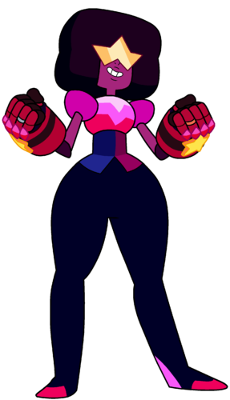
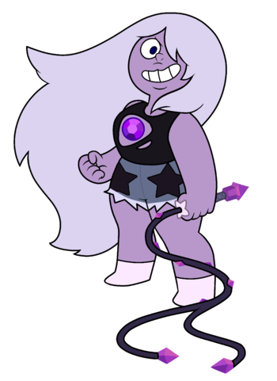
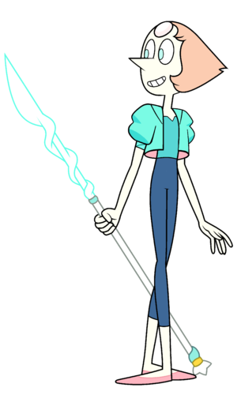
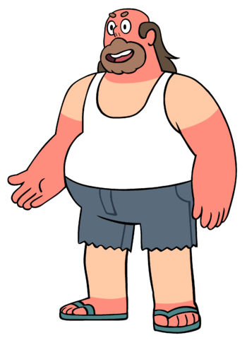
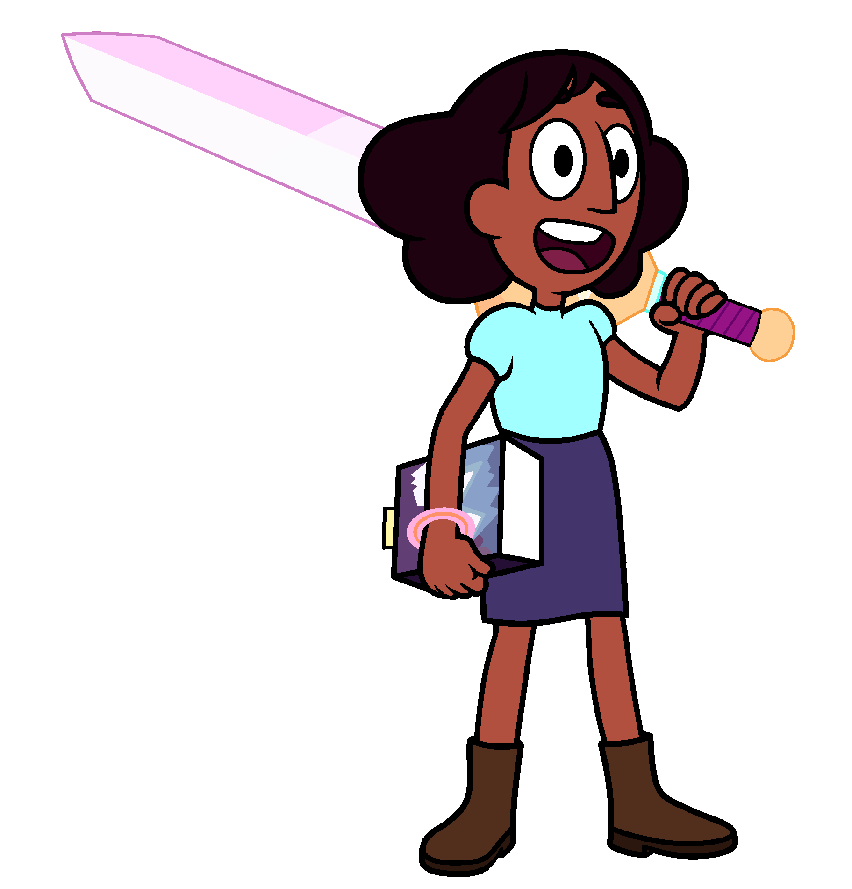
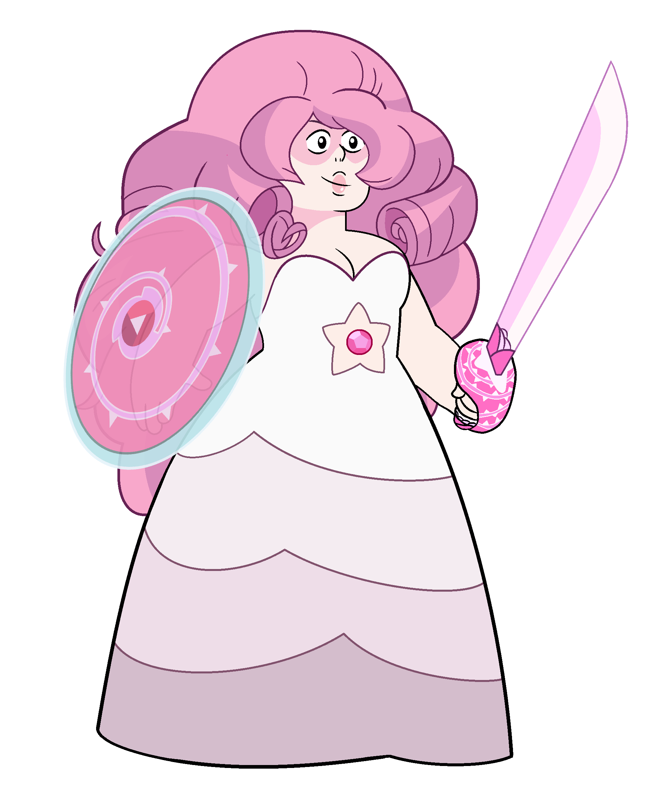

Main Characters
Steven Universe is filled with a diverse set of characters ranging from Gems to the humans of Beach City. Each character has their own development arc throughout the series learning more about themselves and accepting the present they live in. Rebecca Sugar does an amazing job of giving character meaning and making them relatable to an audience of all ages.
Steven Universe

Click the image to change between his old and new design!
The youngest member of the Crystal Gems. He is the only known half-human, half-gem hybrid. Steven is very caring and compassionate to all the people in Beach City. With his optimism, he is able to help the local citizens as well as the rest of the Crystal Gems on important missions. Steven is known to have numerous abilities due to his Gem half. He has healing spit/tears, access to Rose's lion, able to surround himself in a bubble shield, slow down his falling speed as well as wielding a shield as a weapon. These are all powers of Pink Diamond which was carried onto to Steven when he was born. Throughout the series, he learns about himself and what his purpose truly is in the world being a gem/human hybrid. By learning how to control his emotions, he gains more control of his powers. He is the son of Greg Universe and Rose/Pink Diamond.
Garnet
The leader of the Crystal Gems. Known to be the strongest member of the team, Garnet is quiet but very loving to Steven and the rest of the Crystal Gems. In the finale of the first season, Garnet was revealed to be a fusion of two smaller Gems; Ruby and Sapphire. Due to her fusion, she has a third eye which allows her to have future vision to predict three paths of a possible future (this power comes from Sapphire). The weapon that she wields are two large gauntlets.
Amythest
The second youngest member of the Crystal Gems. Unlike Garnet and Pearl, Amethyst was born on Earth and she was one of the last of her colony to emerge from the kindergarten. Her laidback attitude and childish sense of humor allows her to easily get along with Steven. It is revealed in the second season that Amethyst is very different than the Gems of her type being smaller and weaker. Throughout the series, this motivates her to make the best of her size and accept that she can be strong just like the others. The weapon she wields is a whip.
Pearl
Pearl is known to be the strategist and the technician of the Crystal Gems. She has tons of knowledge on Homeworld as well as other types of Gems. Peral is very short-tempered, always wanting things to work in an orderly manner. Out of all the Crystal Gems, she is the one who acts the most motherly to Steven always making she he is not in danger. Pearl had deep feelings for Rose and it caused her to be jealous when Greg came into Rose's life. Later in the series, it is revealed that Pearl was the servant of Rose Quartz as she was Pink Diamond. Throughout the series, Pearl learns how to cope with these emotions and soon move on from the past continuing was Rose/Pink Diamond would have wanted her to do. The weapon she wields is a spear.
Greg Universe
The father of Steven Universe. Greg was a traveling rock star in his past and decided to stay in Beach City after meeting Rose at one of his concerts. Currently, he lives in his van in Beach City while being the owner of the local carwash. Although Greg is only a human, he still is involved with Steven's magical life. Greg's supportive, laid-back attitude allows him to have a great relationship with his son always helping with any type of situation.
Connie Maheswaran
Connie is Steven's best friend and is considered to be part of the Crystal Gems even though she is a human. When she first met Steven, Connie was known to be very intelligent but shy at the same times. As the series progressed, she soon grew a close relationship with Steven soon becoming part of his magical life. Connie consistently trains sword tactics with Pearl. Because of training, she is able to wield Rose's sword and fight alongside Steven and the Crystal Gems. Even though she has overprotective parents, Connie has proved to them that she doesn't have to be shielded from the world and she's able to handle tough situations.
Rose/Pink Diamond
Click the image to change between Rose and Pink Diamond!
The former leader of the Crystal Gems and the mother of Steven.In order for Steven to be born, Rose had to lose her physical form causing her to be part of Steven. Rose was known to be the leader of the rebellion against Homeworld. She changed the lives of numerous Gems; especially Garnet and Pearl. Rose was very understanding, loving and caring to all life forms. In season five, it was revealed that she was Pink Diamond and she was required to colonize the Earth with new Gem lifeforms. However, Pink Diamond fell in love with the Earth; she loved the scenery, the freedom and the life. She wanted to protect the Earth from colonization and she did this by creating her fake identity, Rose, and rebelling against Homeworld. This set her free from her old life.